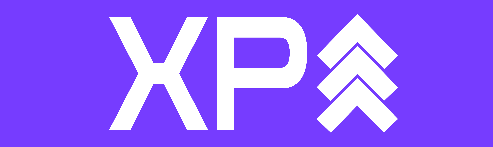
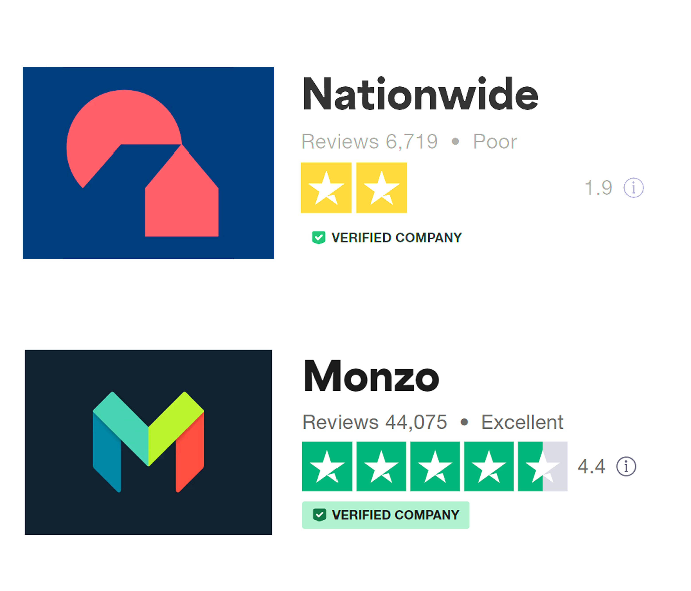
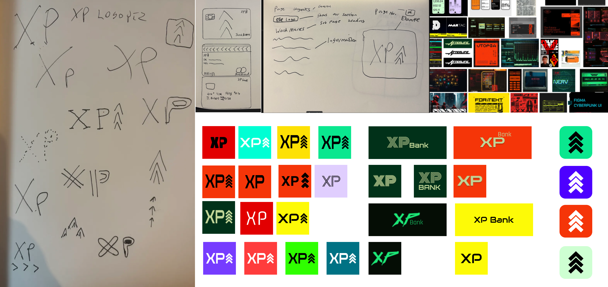
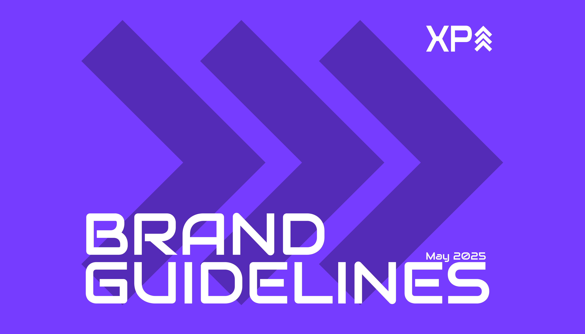
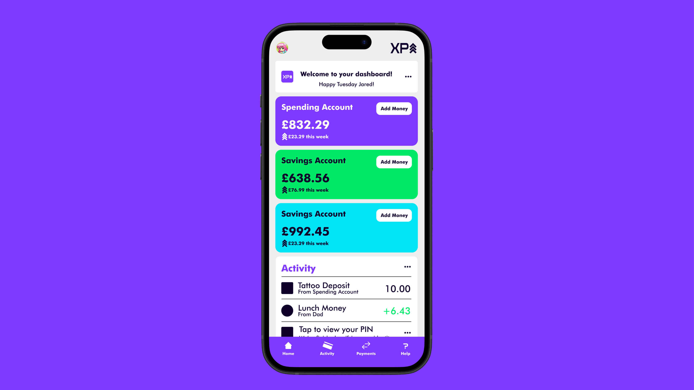
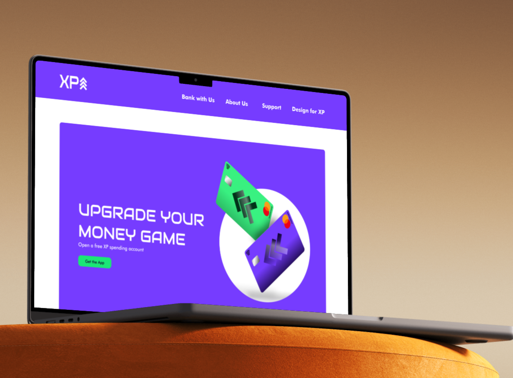
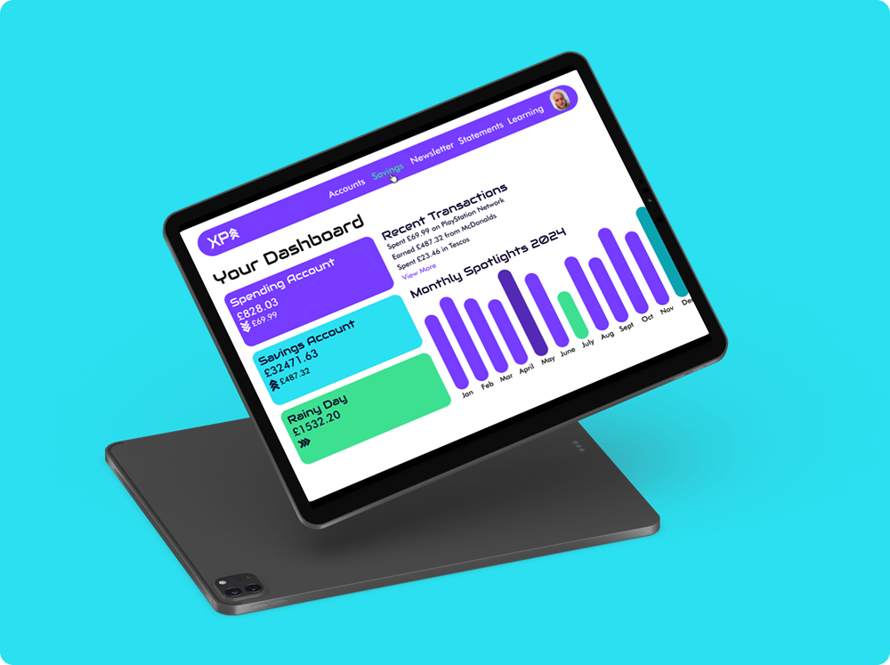
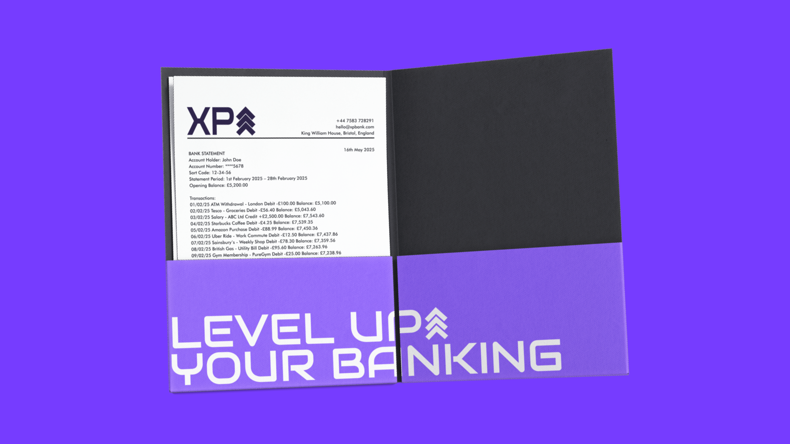
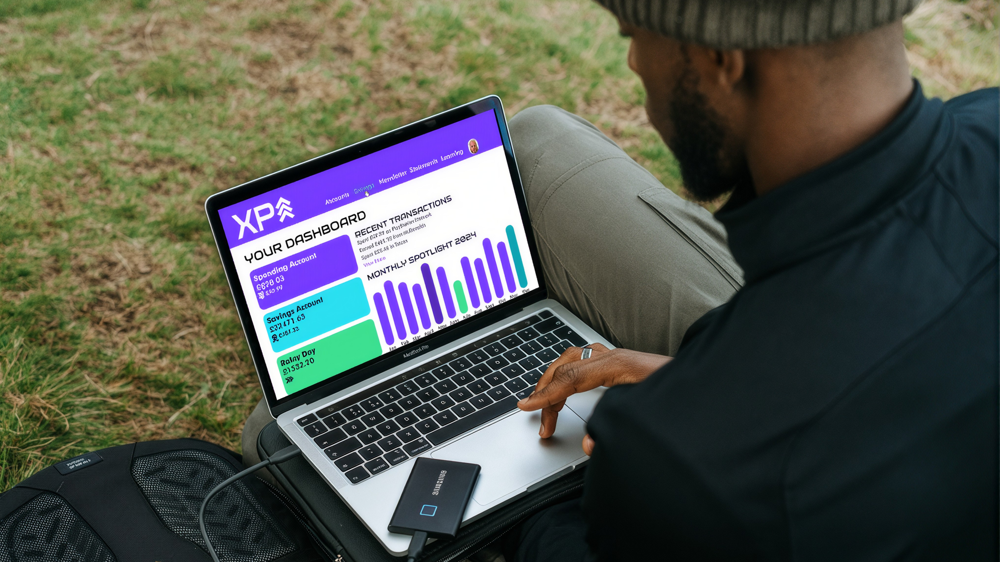

XP Bank

Summary Of Project
XP Bank is a bank designed to feel approachable and supportive for first-time and early-career users who often feel let down by both traditional and modern banks.
Contents
Project Specifications
-
The project ran for 12 weeks.
-
Software: Figma, Blender and After Effects.
-
Creating an identity for a modern bank.
-
Target audience: 16–25 year olds.
-
AI use: none.
The Brief
We were tasked with creating a commercial bank brand aimed at 16–25-year-olds. We could either rebrand an existing bank or create a new one.
XP Bank was built as a new brand from the ground up, so it could be shaped entirely around the needs, behaviours, and expectations of that age group.

Research
Trustpilot reviews of Nationwide and Monzo repeatedly raised the same issues: long waiting times, overcomplicated verification, and a lack of effective support when something went wrong.
User personas covering the younger and older ends of the 16–25 range turned this research into five core values for XP Bank:
- Human rights: fairness, inclusion, no discrimination
- Responsible banking: helping users save, invest and grow
- Round-the-clock support: reliable customer service
- Strong security: proactive scam prevention
- Innovation & feedback: the bank evolves through user input

Ideation

Real user pain points shaped the brand identity. Users struggle most during moments of stress, such as scams, locked accounts, or unexpected issues, so the design prioritises visible security actions, simplified user flows, and a dedicated help area that feels reassuring rather than intimidating.
The first visual direction was cyberpunk-inspired, influenced by Cyberpunk 2077 and Blade Runner 2049. Critique and reflection showed it was too niche and risked harming accessibility, so it was refined into a more restrained, brutalist style that kept its personality while significantly improving clarity and usability.
Development
The project ran for 12 weeks (February–May 2025) and covered brand guidelines, mobile app screens, and a marketing landing page. Work was built primarily in Figma, with After Effects and Blender used for motion.
To push the project further, I studied professional examples such as Wise’s design system. This led to an interactive design system website instead of a static PDF, showing how the brand, components, and patterns scale consistently across contexts.
In the end, I created five deliverables: a 55-page brand guideline, a component library, a landing page for the web, a mobile app and a design system prototype, all of which are shown below.





Final Product
The final outcome included a 55-page brand guideline, a structured component library, 11 mobile app screens, a multi-page landing website, and a fully prototyped design system.
The identity was applied across physical and digital touchpoints, from cards and billboards to tablet screens and stationery.
Brand in use








Brand Guidelines
Flip through the full guidelines like a booklet. Click a page, drag or swipe, use the arrows, or press the arrow keys.
Interactive Prototypes
Every deliverable is live below. Tap, scroll and click through each prototype just as a customer would.
Mobile app
The XP Bank app, shown as a full-height mobile prototype. Tap through the screens to see sign-up, spending, support and security in action.
Landing page
The multi-page marketing website. Scroll and click through it live.
Open the landing page in Figma (opens in a new tab)
Design system
The interactive design system website shows how the brand, components and patterns scale consistently.
AI Transparency
I didn’t use AI at any stage of XP Bank. The research, personas, logo, 55-page brand guidelines, component library, app screens, landing page, design system and motion were all made by me in Figma, Blender and After Effects.
Reflection
This project significantly changed my approach to design. With further development, I would run structured usability testing and a full UX audit to refine accessibility, interaction accuracy and edge cases. Feedback initially challenged my design direction, but it ultimately built my confidence in responding to critique. Most importantly, it showed me how to embed values into design decisions, prioritise real user problems over purely visual ideas, and adapt the work when feedback leads to a better outcome.
Read my notes on Notion (opens in a new tab)